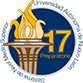
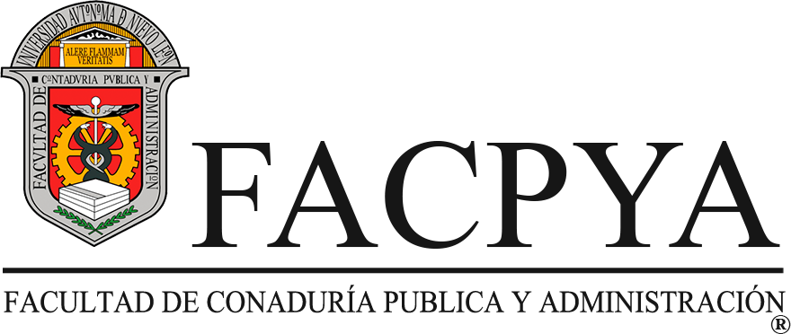

Sobre mi
Me llamo Adrián Ontiveros Tello, nací el , soy estudiante de la Facultad de Contaduría Pública y Administración. Me gusta aprender cosas nuevas y disfrutar de las experiencias, especialmente del proceso. Mis pasatiempos son jugar videojuegos, ver videos, aprender más sobre informática y hacer mis tareas. Específicamente, disfruto jugar Marvel Rivals y Dragon Ball Legends, y mi juego de la infancia es Plants vs. Zombies. Me gusta ver videos de opiniones y teorías sobre películas de superhéroes o videojuegos, además de contenido relacionado con informática; lo más reciente que vi fueron los comandos de diskpart. En la PC, me interesa aprender sobre errores de hardware y reparar mi equipo, pero también disfruto programar porque me resulta relajante. En la preparatoria aprendí lo básico de HTML, sobre todo en diseño, así que en esta materia me da curiosidad JavaScript y, por qué no admitirlo, repasar lo que ya aprendí.
Escolaridad
- Lic. Marín M. Treviño
- Entré en . Tenía muy pocos amigos, por no decir que solo uno. Al principio, tuve dificultades para adaptarme, ya que no podía leer ni hablar bien, así que me llevaron a tomar clases de apoyo en el Hospital Universitario.
- Esc. Sec. #1 "Aquiles Serdan"
- Entré en . En esta etapa tenía muchos amigos que no olvidaré. Logré obtener el primer lugar en cada trimestre varias veces y me acostumbré a ello, tanto que cuando no aparecía en el cuadro de honor, me sentía un poco deprimido.
Nota:
En la secundaria me gustaba resolver ecuaciones con la fórmula general: x = (-b ± √(b2 - 4ac)) / 2a
La única fórmula de química que recuerdo es el H2O. - Preparatoria 17 UANL
- Entré en . En la preparatoria tenía un grupo de tres amigos, ya que los que conocí en la secundaria tomaron caminos distintos o simplemente dejé de verlos. Lo que más valoro de esta etapa es el recuerdo de grandes maestros con los que me llevé muy bien. Además, fue aquí donde conocí el área de TI, de manera general, pero me permitió adentrarme en este mundo.
- Facultad de Contaduría Pública y Administración UANL
- Entré en . Antes de esta carrera, ingresé a FIME, pero solo duré un mes, ya que no me sentía cómodo con mi decisión y decidí salirme. Por eso, en enero de 2023, inicié esta nueva carrera, ya que muchas materias de la malla curricular tenían nombres similares a las que había visto en la prepa. Me sorprendió descubrir que la carrera tiene un enfoque en negocios y tecnología, con contenidos más avanzados; en la prepa solo aprendí lo más básico. En cuanto a amigos, ahora tengo grandes compañeros que son una parte importante de mi motivación para seguir adelante. FACPYA es mi facultad y será en la que me graduaré.
|

|

|
Frases que han marcado mi vida
- Goku, Dragon Ball
-
"Si un perdedor hace muchos esfuerzos, quizá pueda sobrepasar el poder que tiene un guerrero distinguido."
Esta frase fue mi inspiración para esforzarme y demostrar que puedo ser mejor. No soy un prodigio, y quizá haya personas mejores que yo, pero si alguien se propone una meta, tarde o temprano la cumplirá.
- Rayo McQueen, Cars
-
"Una vez me dijo un viejo gruñón que la Copa Pistón... es solo una copa vacía."
Esta frase me ayudó a entender que no todo se trata de ser siempre el mejor. Hay que disfrutar la experiencia y ver el lado positivo de las cosas. Una caída no significa el fin del mundo. El mérito y el reconocimiento, a veces, son solo adornos.